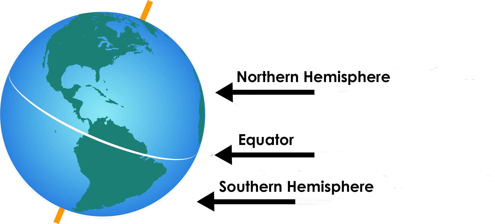

Near the poles the sun’s🌞 rays always strike the ground at an angle. Near the Equator
the rays are more perpendicular. The difference in solar energy received at different latitudes drives
atmospheric
circulation. Places that get more solar energy have more heat🌡️. Places that get less solar energy have less
heat.
Warm air rises and cool air sinks. These principles mean that air moves around the planet🪐. The heat moves
around
the globe🌎 in certain ways. This determines the way
the atmosphere moves.